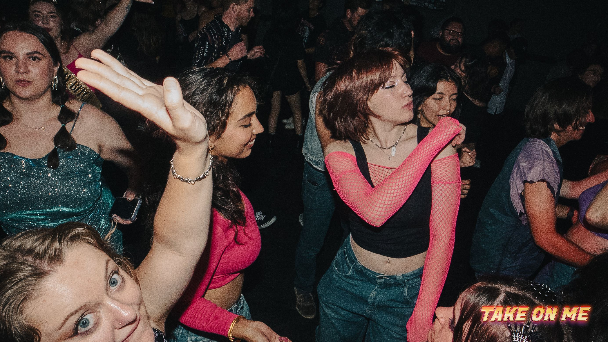

꩜Welcome to My Page꩜
Syd Young 𖦹₊⊹ - they / he / she - 𖦹₊⊹
I am a queer kid from redlands, CA, who loves everything related to plants and nature!
꩜ .áŸâ‘⋆౨à§ËšâŸ¡Ë– my interests .áŸâ‘⋆౨à§ËšâŸ¡Ë–ê©œ
- bugs (especially beetles and weevils!!)
- lichen
- natural patterns and symmetry
- drawing (especially natural documentation)
- fiber art
- baking
- my boyfriend!!
- my pets
- aquariums/terrariuims
if youd like to see what my brain looks like, go here
